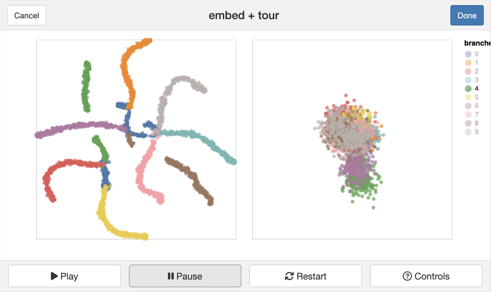
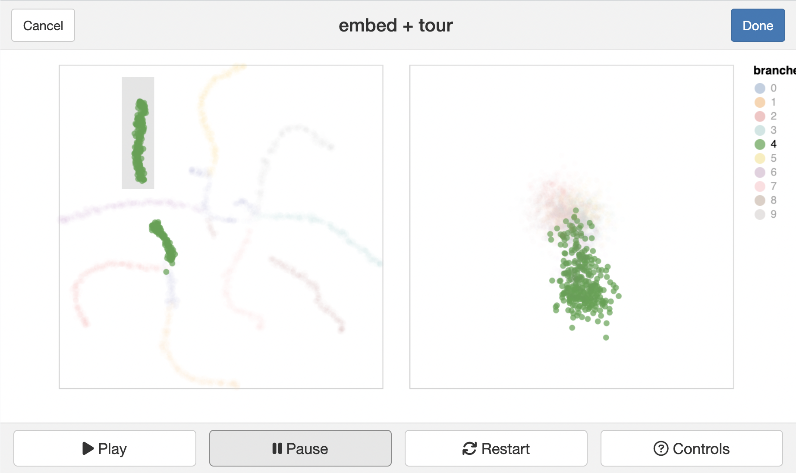
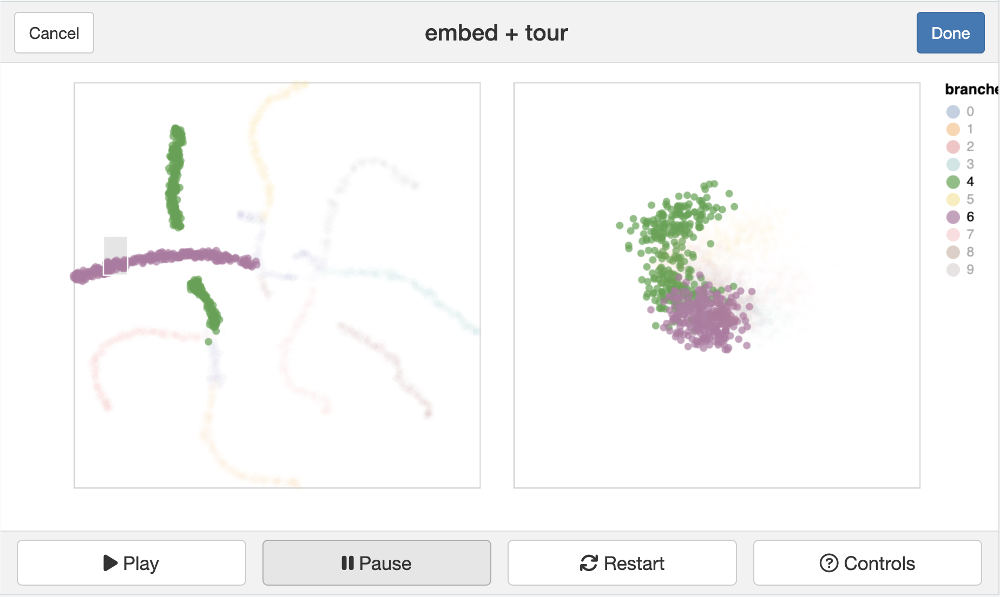
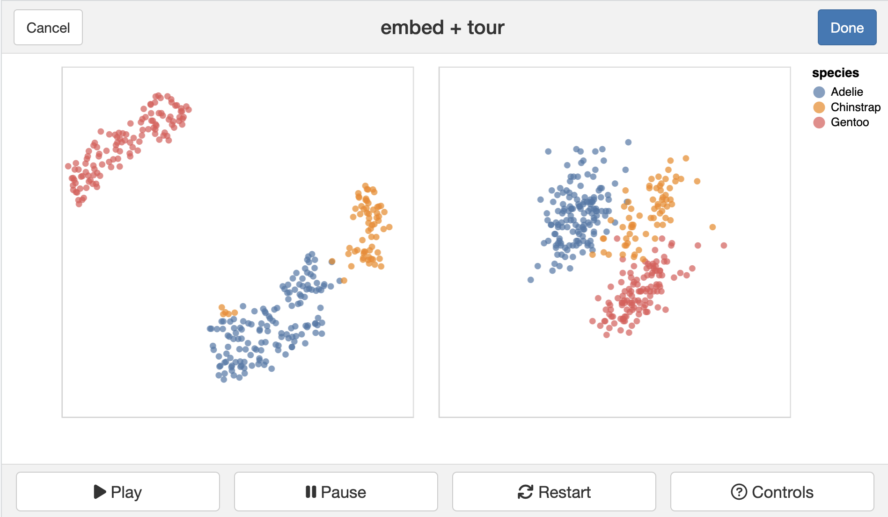

library(liminal)
library(Rtsne)
data(fake_trees)
set.seed(2020)
tsne <- Rtsne::Rtsne(dplyr::select(fake_trees, dplyr::starts_with("dim")))
tsne_df <- data.frame(tsneX = tsne$Y[, 1],
tsneY = tsne$Y[, 2])3 Non-linear dimension reduction
Non-linear dimension reduction aims to find a low-dimensional representation of the high-dimensional data that shows the main features of the data. In statistics, it dates back to Kruskal (1964)’s work on multidimensional scaling. Some techniques only require an interpoint similarity or distance matrix as the main ingredient, rather than the full data.
Show a small simple example here.
Discuss contemporary methods (t-SNE, UMAP, PHATE, trimap, pacmap), and references to MDS literature.
limn_tour_link(
tsne_df,
fake_trees,
cols = dim1:dim10,
color = branches
)
 

Code
load("data/penguins_sub.rda")
set.seed(2022)
p_tsne <- Rtsne::Rtsne(penguins_sub[,2:5])
p_tsne_df <- data.frame(tsneX = p_tsne$Y[, 1], tsneY = p_tsne$Y[, 2])
limn_tour_link(
p_tsne_df,
penguins_sub,
cols = bl:bm,
color = species
)